Arlington 242379R130631
Invoice copy dated 02/12/69 prints DON 00017. Pat Clark Pontiac, Las Vegas; ship-to 24 991. Documented fact Tier 2 poor copy. Cowl 01D, TR 258 Black, paint 72 72.

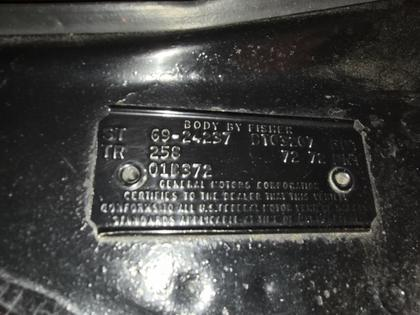
Last updated: November 10, 2026
Featured: Al’s car and why this site exists
Al’s car and the reason for this site. It has the earliest invoice date, 01/30/69, and the earliest cowl week, 01B, among the five DON 00017 cars on file. Al’s ruling of Oct 20, 2026 makes it the first Framingham Judge, for Framingham only. Documented fact A nationwide “first” is not claimed. Hypothesis
In July 2026 Al named 242379G125205 as his lead DON 00017 car. “Earliest” and “lead” are his Hypothesis. The figures below match the papers on file.
| # | Plant | VIN | DON | Cowl date | Invoice no. | Allocation | Trans | Interior | Key references |
|---|---|---|---|---|---|---|---|---|---|
| 1, lead | Framingham, G | 242379G125205 | 00017 | 01B | ZGA 453185 | 29-991 | TH400, TURB/HYDR | Parchment, TR 257, cowl FM 56607 | PHS invoice, cowl tag and broadcast sheet. Hypothesis as lead and earliest |
| 2 | Arlington, R | 242379R130631 | 00017 | 01D | ZRA 48845? | 24-991 | 4 SPD | Black, TR 258 | PHS invoice and cowl tag |
| 3 | Fremont, Z | 242379Z114103 | 00017 | 01E | ZZA 468236 | 23-991 | TH400 | Parchment, TR 257 | PHS invoice and cowl tag |
| 4 | Atlanta, A | 242379A119165 | 00017 | 02A | ZAA 544435 | 19-993 | TH400 | Parchment, TR 257 | PHS invoice and cowl tag |
| 5 | Atlanta, A | 242379A120714 | 00017 | 02C | ZA? 55667? | 20-991 | 4 SPD | Parchment, TR 257 | PHS invoice and cowl tag |
Download Al’s Lead Production Car Declaration, corrected November 2026
Documents for this car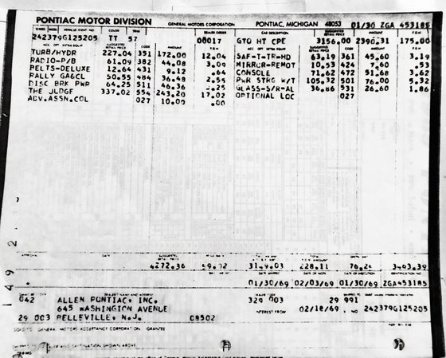
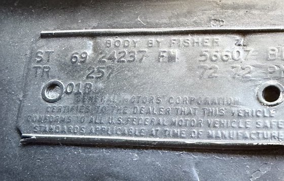
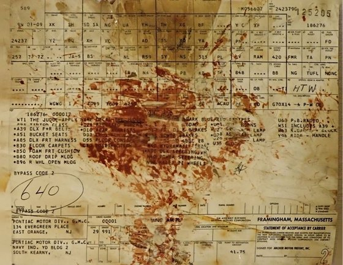
Same dealer order number, different plants and zones: one car per zone. Documented fact Al’s ruling, Oct 20, 2026
Forum researchers proposed in 2019 that each Pontiac zone office issued its own dealer order numbers, and registry tables group pattern cars by zone. Al’s ruling applies that reading to the five DON 00017 cars.
Image credits: the papers and photos of these four cars belong to their owners or to the sellers who posted them. The 242379A119165 invoice is the copy shown in the Street Dreams Texas sale listing for that car. The other copies reached Al Diaz in October 2026 in owner and listing sets and are shown for research with credit to each car’s owner. Any owner may ask for an image to be removed.
Invoice copy dated 02/12/69 prints DON 00017. Pat Clark Pontiac, Las Vegas; ship-to 24 991. Documented fact Tier 2 poor copy. Cowl 01D, TR 258 Black, paint 72 72.

Invoice ZZA 468236, dated 02/05/69, prints DON 00017 and THE JUDGE 554. Cunha Pontiac, Berkeley; ship-to 23 991. Documented fact
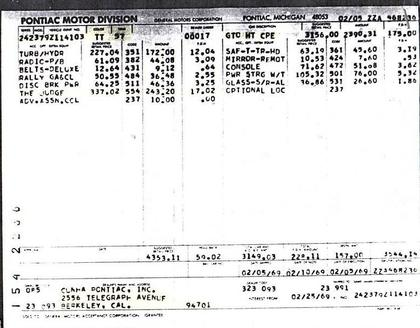
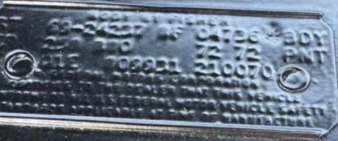
PHS invoice ZAA 544435 prints DON 00017 and VIN 242379A119165. Big 4 Pontiac-Cadillac, Tupelo; shipped 03/04/69. Documented fact Cowl ATL 514562 is matched by Al’s declaration. Corroborated interpretation
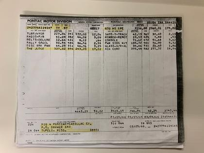
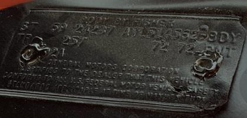
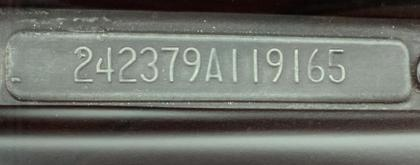
Invoice ZA? 55667?, dated 03/07/69, prints THE JUDGE 554. Stevenson Motor Co., Canyon, Tex.; ship-to 20 991. Documented fact The DON field is hard to read. Cowl ATL 515284 is matched by Al’s declaration. Corroborated interpretation
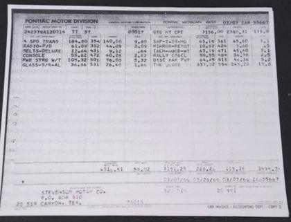
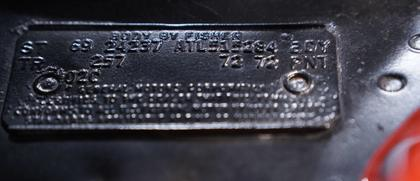
The May 8, 1969 Goad memo states production began “in mid January with 1,000 pattern cars being built in Carousel Red only.” Documented fact Tier 2 Mike Noun first reported this memo publicly on the Performance Years forum in September 2015.
Factory invoices for early Judges often print a low dealer order number such as 000xx and a ship-to ending in 991, 992, 993 or 995 rather than a normal dealer code. Documented fact for the invoices read, Tier 2 PHS invoice copies. That these markings identify the pattern-car program is a Corroborated interpretation; no Pontiac page on file defines them. This reading follows earlier work: Performance Years forum posts from 2005 onward, and Mike Noun’s October 2016 Smoke Signals article, which described pattern cars going to Pontiac Zone Lots.
Car Distribution Bulletin 69-48 does not mention pattern cars, a 1,000-car batch, dealer order numbers or zone 991. Documented fact
Neither story is linked to VIN 242379G125xxx. To be documented, such a car would need the same VIN readable on a PHS invoice, a broadcast sheet and its original sale paper.
Illustrations and period marketing art. These are not evidence for any VIN, DON or factory claim. Tap a thumbnail for the full image.
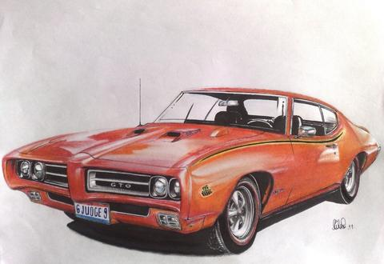
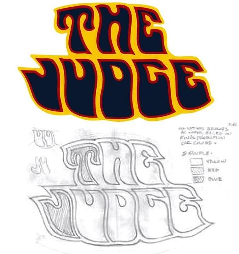
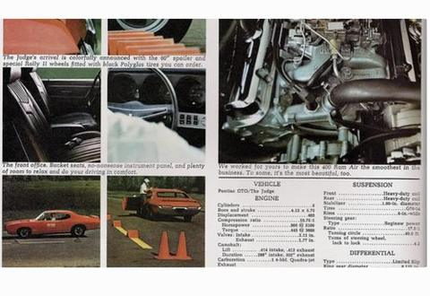
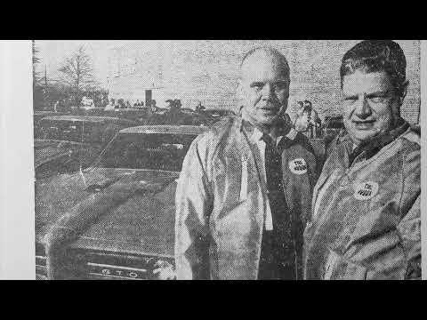
1969 GTO Judge Order #00017: Framingham Lead UnitAl’s commentary and interpretation. The video title is the author’s wording, not independent factory authentication or proof of production priority. Consult the linked records for documentary support and current readings. Opens on YouTube; no embedded player.
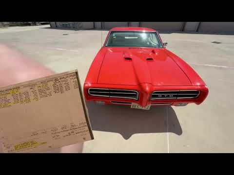
1969 Pontiac GTO Judge – The Lead Production Car | Framingham DON 00017More from Al: Framingham DON 00017. Al’s commentary and interpretation. The title expresses the author’s position; it is not independent factory proof of production priority. Consult the document copies for evidence and current readings. Opens on YouTube; no embedded player.